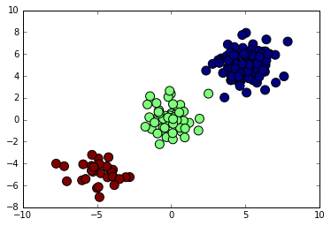

Learning machine learning? Try my machine learning flashcards or Machine Learning with Python Cookbook.
Simple Clustering With SciPy
Import modules
import numpy as np
%matplotlib inline
import matplotlib.pyplot as plt
from scipy.cluster import vqCreate coordinates for battles for each year of the war
# create 100 coordinate pairs (i.e. two values), then add 5 to all of them
year_1 = np.random.randn(100, 2) + 5
# create 30 coordinatee pairs (i.e. two values), then subtract 5 to all of them
year_2 = np.random.randn(30, 2) - 5
# create 50 coordinatee pairs (i.e. two values)
year_3 = np.random.randn(50, 2)View the first 3 entries of each year of battles
print('year 1 battles:', year_1[0:3])
print('year 2 battles:', year_2[0:3])
print('year 3 battles:', year_3[0:3])year 1 battles: [[ 5.25720722 4.78051294]
[ 4.11980541 6.24062638]
[ 4.04612449 5.23819217]]
year 2 battles: [[-3.90607071 -5.20880154]
[-4.14244415 -4.52520445]
[-6.01162308 -5.53489708]]
year 3 battles: [[-0.54820297 -0.97483204]
[ 0.12813873 0.55198748]
[-0.55677223 -0.68900608]]
Pool all three years of coordinates
# vertically stack year_1, year_2, and year_3 elements
battles = np.vstack([year_1, year_2, year_3])Cluster the battle locations into three groups
# calculate the centroid coordinates of each cluster
# and the variance of all the clusters
centroids, variance = vq.kmeans(battles, 3)View the centroid coordinate for each of the three clusters
centroidsarray([[ 5.02707263, 5.03041508],
[-0.05392784, 0.12892838],
[-4.88957266, -4.85051116]])
View the variance of the clusters (they all share the same)
variance1.2948126660038406
Separate the battle data into clusters
identified, distance = vq.vq(battles, centroids)View the cluster of each battle
identifiedarray([0, 0, 0, 0, 0, 0, 0, 0, 0, 0, 0, 0, 0, 0, 0, 0, 0, 0, 0, 0, 0, 0, 0,
0, 0, 0, 0, 0, 0, 0, 0, 0, 0, 0, 0, 0, 0, 0, 0, 0, 0, 0, 0, 0, 0, 0,
0, 0, 0, 0, 0, 0, 0, 0, 0, 0, 0, 0, 0, 0, 0, 0, 0, 0, 0, 0, 0, 0, 0,
0, 0, 0, 0, 0, 0, 0, 0, 0, 0, 0, 0, 0, 0, 0, 0, 0, 0, 0, 0, 0, 0, 0,
0, 0, 0, 0, 0, 0, 0, 0, 2, 2, 2, 2, 2, 2, 2, 2, 2, 2, 2, 2, 2, 2, 2,
2, 2, 2, 2, 2, 2, 2, 2, 2, 2, 2, 2, 2, 2, 2, 1, 1, 1, 1, 1, 1, 1, 1,
1, 1, 1, 1, 1, 1, 1, 1, 1, 1, 1, 1, 1, 1, 1, 1, 1, 1, 1, 1, 1, 1, 1,
1, 1, 1, 1, 1, 1, 1, 1, 1, 1, 1, 1, 1, 1, 1, 1, 1, 1, 1], dtype=int32)
View the distance of each individual battle from their cluster’s centroid
distancearray([ 0.3397249 , 1.51252941, 1.00271161, 0.7583883 , 0.58103782,
1.81905849, 1.45452846, 1.34523274, 0.69254441, 3.32123157,
1.73900653, 1.01999434, 1.5392708 , 0.64417605, 1.25822142,
1.68913457, 1.09543587, 0.20750281, 2.90778804, 1.62549404,
1.0224336 , 1.05196193, 0.98434964, 0.25634371, 1.19779956,
1.73517217, 2.69339667, 1.32792584, 0.97809768, 1.52654056,
2.20554365, 1.0403091 , 0.93698624, 1.53359041, 0.91717984,
0.3008527 , 0.42901893, 0.95824461, 1.93321831, 1.89139314,
1.49982335, 0.63265951, 1.48579627, 1.04574742, 0.83477916,
2.80489932, 1.50671741, 0.35230994, 1.18607368, 1.36078497,
1.17298152, 0.95961251, 0.95348923, 1.41903574, 1.7816999 ,
1.32087763, 0.94807163, 2.22741733, 0.66198152, 0.97404075,
0.24009773, 1.22021557, 1.36298565, 1.77358477, 0.62586652,
1.45234278, 1.87925214, 2.18673534, 0.97113871, 1.0436524 ,
1.63491437, 1.43922603, 1.8066756 , 2.55661988, 0.64905457,
0.6939938 , 1.41183181, 2.72140674, 1.70390906, 3.53986459,
1.52044903, 1.98702847, 1.2488108 , 2.61774172, 2.66067284,
0.80078946, 0.79648259, 2.72215296, 1.26904383, 1.16048896,
1.42571458, 1.18519189, 0.46592397, 0.63831379, 0.2294296 ,
0.90199062, 0.99296186, 1.79154225, 0.23854105, 1.19095902,
1.0467321 , 0.81487758, 1.31429876, 0.14625493, 1.04421102,
0.72132375, 2.2209666 , 1.00145286, 1.30465026, 1.57217776,
1.31999891, 0.80321763, 2.12942642, 0.81168612, 1.40294667,
0.89994242, 1.70402817, 0.79621269, 1.29554062, 1.87340273,
2.40582742, 2.99089606, 1.01348705, 0.54974364, 0.39367389,
2.28343779, 1.51924388, 0.52095884, 1.54219385, 0.62972955,
1.20937793, 0.46057272, 0.96014023, 0.2287637 , 0.84009151,
1.34393522, 1.5983523 , 0.46066181, 0.49504327, 2.22788557,
1.74688212, 1.99998478, 0.25864751, 1.06955924, 1.68029793,
3.41862662, 1.9273365 , 0.91580509, 0.94390424, 1.42991149,
0.64314749, 0.26250126, 1.09000179, 0.42658645, 0.40866344,
0.47829004, 0.47718204, 0.53641019, 1.42037169, 2.20413065,
1.85270104, 1.9544685 , 1.40727147, 0.85730366, 1.63316935,
1.09642325, 1.36490331, 1.307389 , 1.9727463 , 1.35859479,
2.43699622, 0.80833152, 2.50758584, 0.95216108, 0.16936114,
0.98714981, 0.19962377, 1.13262204, 2.47056129, 2.00154513])
Index the battles data by the cluster to which they belong
cluster_1 = battles[identified == 0]
cluster_2 = battles[identified == 1]
cluster_3 = battles[identified == 2]Print the first three coordinate pairs of each cluster
print(cluster_1[0:3])
print(cluster_2[0:3])
print(cluster_3[0:3])[[ 5.25720722 4.78051294]
[ 4.11980541 6.24062638]
[ 4.04612449 5.23819217]]
[[-0.54820297 -0.97483204]
[ 0.12813873 0.55198748]
[-0.55677223 -0.68900608]]
[[-3.90607071 -5.20880154]
[-4.14244415 -4.52520445]
[-6.01162308 -5.53489708]]
Plot all the battles, color each battle by cluster
# create a scatter plot there the x-axis is the first column of battles
# the y-axis is the second column of battles, the size is 100, and
# the color of each point is determined by the indentified variable
plt.scatter(battles[:,0], battles[:,1], s=100, c=identified)<matplotlib.collections.PathCollection at 0x10d43f588>
